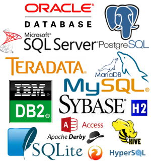

Database Best Practices
DBI, odbc and pool
Jim Hester
Databases

ODBC - Open Database Connectivity
- Standard Interface (API)
- Connection Configuration / Strings
- Widely adopted (Drivers)
- Cross Platform (Linux, MacOS, Windows)
DBI - Database Interface
- DBs <-> R/S
- First CRAN release (2001-12-05), also S-PLUS
- David A. James - (2001), Hadley Wickham (2014), Kirill Müller (2016)
- DBItest - comprehensive compatability testing
- Next dplyr release, generic DBI backend
odbc
devtools::install_github("rstats-db/odbc")- DBI compatible
- Complete Rewrite of RODBC
- C++ / Rcpp
- Well tested

- Support for dates / timestamps / raw binary types
- Batched queries
- Faster (3-4X Reading, 2x Writing than RODBC)
- Parameterized queries
Reading
# First using RODBC / RODBCDBI
library(DBI)
library(RODBCDBI)
rodbc <- dbConnect(RODBCDBI::ODBC(), dsn = "PostgreSQL")
system.time(rodbc_result <- dbReadTable(rodbc, "flights"))
#> Warning: closing unused RODBC handle 2
#> user system elapsed
#> 19.203 1.356 21.724
# Now using odbc
odbc <- dbConnect(odbc::odbc(), dsn = "PostgreSQL")
system.time(odbc_result <- dbReadTable(odbc, "flights"))
#> user system elapsed
#> 5.119 0.290 6.771Writing
library(nycflights13)
# rodbc does not support writing timestamps natively.
rodbc <- dbConnect(RODBCDBI::ODBC(), dsn = "PostgreSQL")
system.time(dbWriteTable(rodbc, "flights2", as.data.frame(flights[, names(flights) != "time_hour"])))
#> user system elapsed
#> 6.693 3.786 48.423
# Now using odbc
odbc <- dbConnect(odbc::odbc(), dsn = "PostgreSQL")
system.time(dbWriteTable(odbc, "flights3", as.data.frame(flights)))
#> user system elapsed
#> 7.802 3.703 26.016Avoiding SQL Injection (Stopping little bobby tables)

- Very bad!!! - Users could erase entire tables!
- DBI
sqlInterpolate(),dbQuoteString(),dbQuoteIdentifier()dbBind()- Parameterized Queries
Parameterized Queries
INSERT INTO XYZ (?, ?),dbBind()dbWriteTable()(automatic)
Parameterized Queries
library(DBI);con <- dbConnect(odbc::odbc(), "PostgreSQL");dbWriteTable(con, "iris", iris, overwrite = TRUE)iris_result <- dbSendQuery(con,
"SELECT * FROM iris WHERE \"Petal.Width\"> ?")
dbBind(iris_result, 2.3)
dbFetch(iris_result)## Sepal.Length Sepal.Width Petal.Length Petal.Width Species
## 1 6.3 3.3 6.0 2.5 virginica
## 2 7.2 3.6 6.1 2.5 virginica
## 3 5.8 2.8 5.1 2.4 virginica
## 4 6.3 3.4 5.6 2.4 virginica
## 5 6.7 3.1 5.6 2.4 virginica
## 6 6.7 3.3 5.7 2.5 virginicadbBind(iris_result, 2.4)
dbFetch(iris_result)## Sepal.Length Sepal.Width Petal.Length Petal.Width Species
## 1 6.3 3.3 6.0 2.5 virginica
## 2 7.2 3.6 6.1 2.5 virginica
## 3 6.7 3.3 5.7 2.5 virginicadbClearResult(iris_result); dbDisconnect(con)Demo
Pool
- General Object Pooling, reuse objects from pool
- DBI Connections - Use Case
- Problem - Shiny Applications
- Single R process
- Multiple Users
- Establishing Connections
- Takes time
- Limited #
- Failure?
Pool
library(shiny)
library(DBI)
library(pool)
pool <- dbPool(
drv = RMySQL::MySQL(),
dbname = "shinydemo",
host = "shiny-demo.csa7qlmguqrf.us-east-1.rds.amazonaws.com",
username = "guest",
password = "guest"
)
ui <- fluidPage(
textInput("ID", "Enter your ID:", "5"),
tableOutput("tbl"),
numericInput("nrows", "How many cities to show?", 10),
plotOutput("popPlot")
)
server <- function(input, output, session) {
output$tbl <- renderTable({
sql <- "SELECT * FROM City WHERE ID = ?id;"
query <- sqlInterpolate(pool, sql, id = input$ID)
dbGetQuery(pool, query)
})
output$popPlot <- renderPlot({
query <- paste0("SELECT * FROM City LIMIT ",
as.integer(input$nrows)[1], ";")
df <- dbGetQuery(pool, query)
pop <- df$Population
names(pop) <- df$Name
barplot(pop)
})
}
shinyApp(ui, server)Future Work
Generic Connections Tab
- Like sparklyr tab in RStudio IDE 1.0
- Connections Dialog - Easy connection creation
- Re-establish previously used connections
- View available Drivers / Data Source Names (DSN)
- View Tables / Schemas
- Will be included in RStudio IDE 1.1
RStudio Server Pro - Bundled ODBC Drivers
- Easy setup for a wide variety of DB (50+)
- Improved performance
- Improved error messaging
- Kerberos support
DBI
install.packages("DBI")
sqlIterpolate(), dbQuoteString(), dbQuoteIdentifier()
odbc
devtools::install_github("rstats-db/odbc")
dbConnect(odbc::odbc(), ...), dbGetQuery(), dbReadTable(), dbWriteTable()
pool
devtools::install_github("rstudio/pool")
dbPool(), sqlInterpolate()